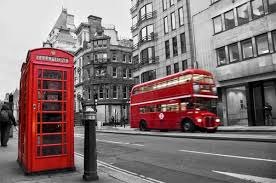
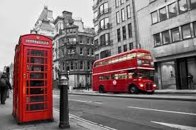
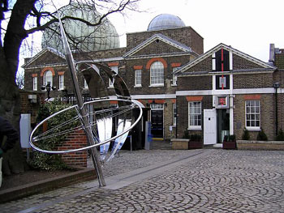
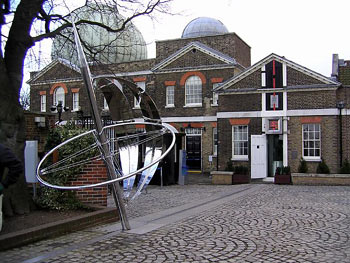
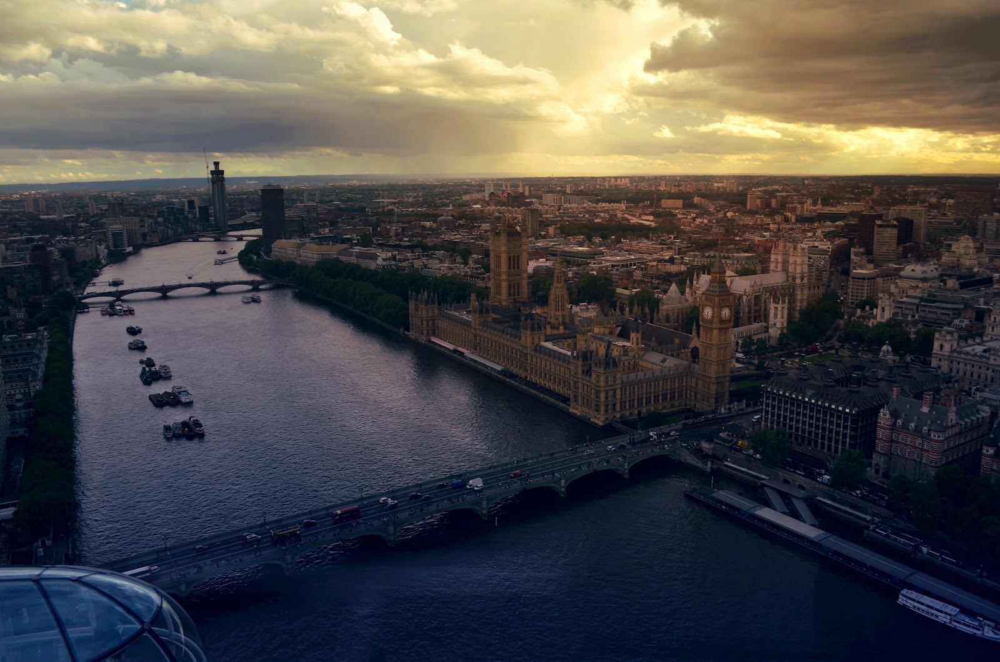
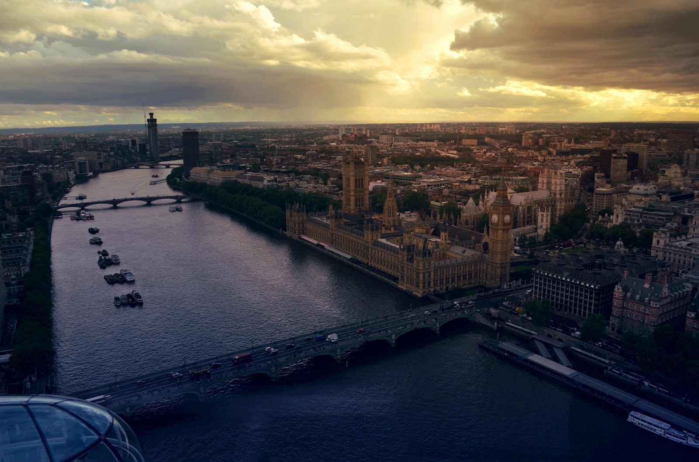

Londyn
Bo marzenia się spełniają
Upragniona wycieczka do Londynu! Tym razem zorganizowana przez szkołę. Szkoda, że spędzimy tutaj tylko 3 dni. W końcu w tym mieście jest zbyt wiele atrakcji, aby na wszystkie starczyło czasu. Z tą świadomością już na samym początku stwierdzam, że koniecznie trzeba tu powrócić. Tym razem na dłużej.
Z czego słynie Londyn
 


A o czym rzadko się mówi

 

Niepowtarzalne widoki

 
